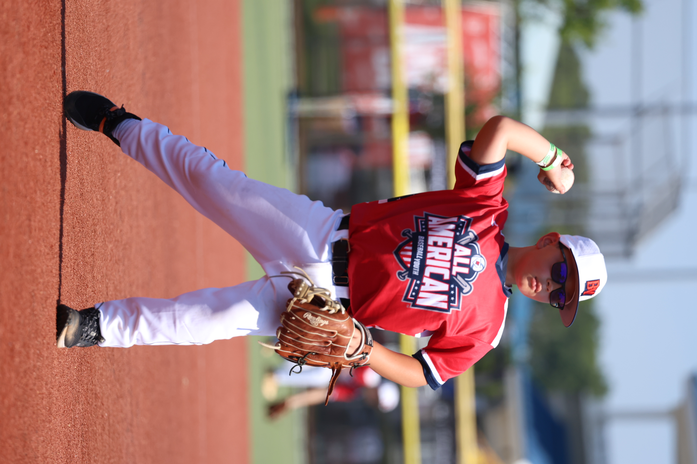
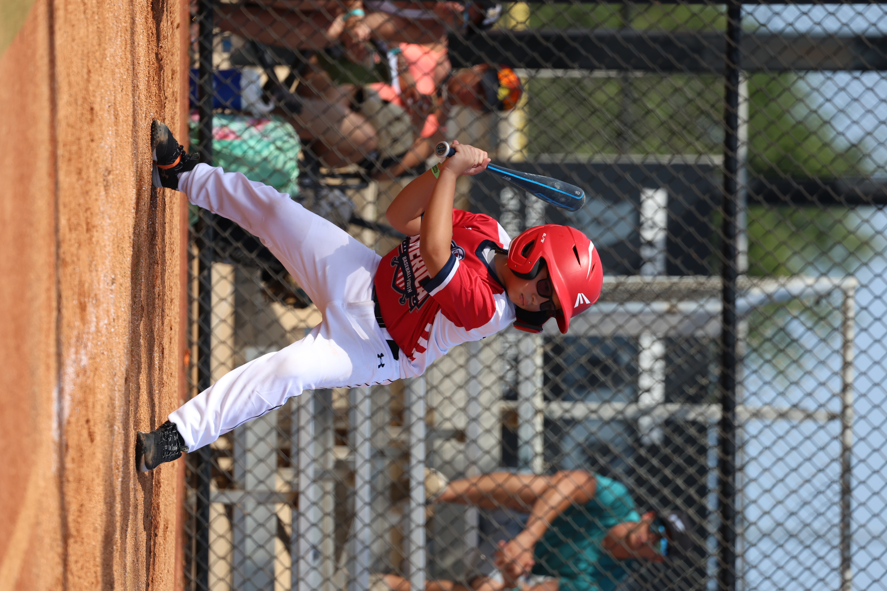
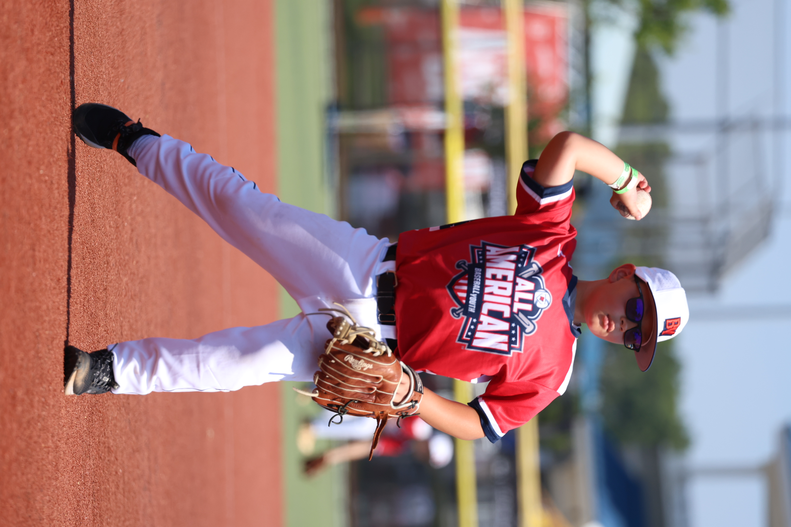
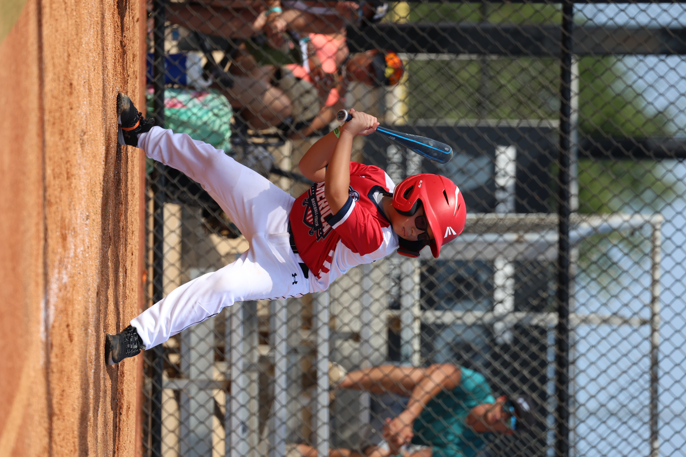

Who is Yadier?
Catcher, 1st and 2nd Base
Yadier is a kid who loves baseball. Since he was 4years old, he would play catch with his dad. Now as a 9 year old he loves to play with his team mates. He plays different positions. His main position is catcher, but he also plays 1st, shortstop and 2nd base.
Positions
Yadi's Baseball Positions
First Base
First base is a crucial position in baseball. It requires quick reflexes and good hand-eye coordination to catch throws from infielders and cover the base efficiently. Players at first base should also be ready to make split-second decisions to tag the base or make a play on a runner.
What I like about it
First base was his first position when he was 5 years old in rec team. Due to his strong arms and tall built, he can reach 3rd base with ease.
Catcher
Catcher is a pivotal position in baseball. Catchers need to be not only skilled at receiving pitches and framing strikes but also adept at throwing out baserunners attempting to steal. Their leadership on the field, ability to communicate with pitchers, and resilience in blocking pitches make them indispensable assets to the team's defense.
What I like about it
Need info
2nd Base
Second base is a critical position in baseball. Players at second base need to possess quick reflexes and strong fielding abilities to turn double plays and cover the base effectively. Additionally, their ability to read the game and anticipate plays helps maintain the team's defensive integrity up the middle of the field.
What I like about it
Need info
gallery
My Photos

 


